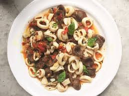

Cuttlefish
Ways to Eat It: Pan-fried, poached, grilled, baked, cut into rings if you want - and the ink is commonly used in pasta and rice dishes.
Pros: Pretty much the same as a squid. Do you like squid?
Cons: Small, precarious, and full of ink, the cuttlefish (or "sepia") is messy and difficult to clean and cook, which means it is usually costs a little more.
